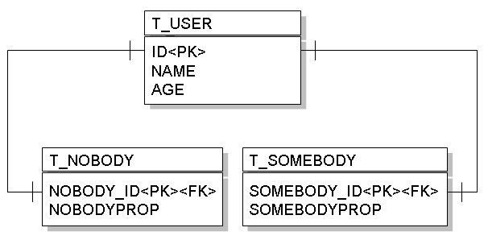
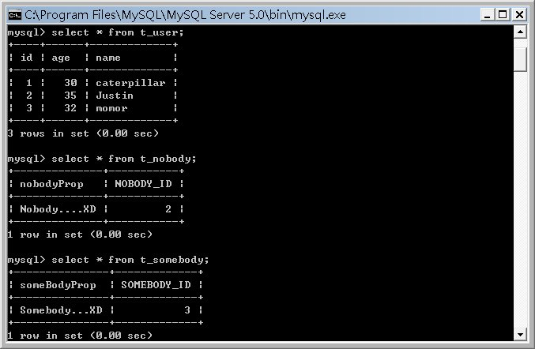

|
|
Table per
subclass的繼承映射方式，給予父類與子類個分別的表格，而父類與子類對應的表格透過外鍵來產生關聯，具體的說，User類別、 Nobody類別與Somebody類別所映射的表格如下：  其中T_USER表格的id與Nobody及Somebody的id 一致，具體的說，在儲存Nobody實例時，id與name屬性記錄在T_USER表格中，而nobodyProp記錄在T_NOBODY中，假設T_USER表格的id值為1，則T_NOBODY表格對應的該筆記錄其id值也會為1。 而在定義時，可以標註InheritanceType為JOINED，例如：
package onlyfun.caterpillar; 而子類別的部份，則使用@PrimaryKeyJoinColumn標註對應的主鍵欄位，例如：
package onlyfun.caterpillar;
package onlyfun.caterpillar; 同樣記得，在persistence.xml中，要增加這三個類別的<class>標籤，以載入實體類別資訊。 假設您分別儲存了User、Nobody與Somebody實例，則一個MySQL資料庫中的表格狀態如下所示：  而在查詢時，會使用適當的JOIN來結合表格進行查詢，例如在Hibernate作為JPA的實作下，以下的查詢： Query query = entityManager.createQuery("SELECT user FROM User user");
會產生以下的SQL語句： select user0_.id as id0_, user0_.age as age0_, user0_.name as name0_, user0_1_.nobodyProp as nobodyProp1_, user0_2_.someBodyProp as someBody1_2_, case when user0_1_.NOBODY_ID is not null then 1 when user0_2_.SOMEBODY_ID is not null then 2 when user0_.id is not null then 0 end as clazz_ from T_USER user0_ left outer join T_NOBODY user0_1_ on user0_.id=user0_1_.NOBODY_ID left outer join T_SOMEBODY user0_2_ on user0_.id=user0_2_.SOMEBODY_ID 而如果是查詢個別資料，例如： Nobody nobody = entityManager.find(Nobody.class, new Long(1));
會產生以下的SQL語句： select nobody0_.NOBODY_ID as id0_0_, nobody0_1_.age as age0_0_, nobody0_1_.name as name0_0_, nobody0_.nobodyProp as nobodyProp1_0_ from T_NOBODY nobody0_ inner join T_USER nobody0_1_ on nobody0_.NOBODY_ID=nobody0_1_.id where nobody0_.NOBODY_ID=? 效能是這個映射類型需要考量的，在複雜的類別繼承下，新增資料必須對多個表格進行，而查詢時，跨越多個表格的join也可能引發效能上的問題。 如果您需要多型查詢，而子類別相對來說有較多新增的屬性，則可以使用這種映射方式。 |